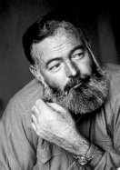

Yirminci yüzyılın en önemli Amerikalı yazarlarından çok azı Ernest Hemingway (1899-1961) kadar etkili olup taklit edilmiş, yine çok azı onun kadar kötülenmiştir. Romanları ve kısa öyküleri ile bilinen Hemingway, hayatı boyunca öyle tanınmış biri olmuş ve kendi hakkında öyle efsaneler yaratmıştır ki bazen bunları gerçeklerden ayırt etmek hayli zordur.

1899’da İllinois, Oak Park’ta dünyaya gelen Hemingway yazarlığa olan tutkusunu erken yaşlarda keşfetti. On sekiz yaşında Kansas City Star’da muhabir olarak çalışmaya başladı. Birkaç ay içinde I. Dünya Savaşı’nda, sonradan yaralanacağı İtalyan cephesinde Kızılhaç ambulans şoförü olarak göreve alındı. Savaştan sonra, Gertrude Stein gibi yurtdışında yaşayan, savaşın zalimliğinden dolayı hayal kırıklığına uğramış Kayıp Kuşak’tan diğer Amerikalı yazarlarla beraber uzun süre Paris’te yaşadı. Paris’te Hemingway kendi tarzını; görünüşteki basitliğiyle insanı yanıltan, yinelemeli, erkeksiliğinin bilincinde olan o yalın yazım tarzını iyice belirginleştirdi.
Kuzey Michigan’da ergenlik dönemindeyken geçirdiği yazlara ve sonraları Avrupa’ya yaptığı yolculuklara dayanan birçok kısa öykü yazdıktan sonra, Hemingway ilk ve en önemli romanı Güneş de Doğar’ı kaleme aldı (1926). Zamanını İspanya ve Fransa’da geçiren asi, genç bir Amerikalı hakkında olan bu kitap Hemingway’e anında şöhreti getirdi. Bu kitabı, I. Dünya Savaşı sırasında Amerikalı bir ambulans şoförü ile İngiliz bir hemşire arasındaki trajik aşkı konu alan Silahlara Veda (1929) ve İspanyol İç Savaşı sırasında bir gazeteci olarak çalışan Hemingway’in kendi işinden ilham alarak yazdığı bir gerilla hikâyesi olan Çanlar Kimin için Çalıyor? (1940) romanları izledi. Bu romanlardan ikincisinin baş karakteri, birçok kişinin “Hemingway’in ideal kahramanı” olarak nitelendirdiği, şiddet ve zorluklar karşısında merhamet ve asalet gösteren, hayal kırıklığına uğramış ancak acılara dayanıklı erkek karakteri örneklendirir.
Şöhreti artan Hemingway sadece savaş, boğa güreşi, avcılık, balıkçılık ve diğer bariz şekilde erkeksi konular hakkında yazmakla ünlenmiştir. Bazı eleştirmenler Hemingway’in eserlerini maço bir tutum sergilendiğini düşünerek görmezden gelse de, Yaşlı Adam ve Deniz (1952) adlı kısa romanın anlatımındaki tartışılmaz ustalık Hemingway’e 1954 yılında edebiyat dalında Nobel Ödülü’nü kazandırmıştır. Bu önemli başarısına rağmen, Hemingway son yıllarında sağlığını yitirmiş, depresyona gömülmüş ve nihayet 1961 yılında bir tüfekle intihar etmiştir. Ancak, modern roman tarzı üzerindeki etkisi varlığını sürdürmektedir.
EK BİLGİ:
1. Her yıl düzenlenen Hemingway Taklit Yarışması’na, yazarın kolay anlaşılır tarzına dalgacı bir üslupla yaklaşan yüzlerce başvuru yapılmaktadır. Önceki yıllarda ödül alan kitap başlıklarından bazıları The Old Man and the Flea (Yaşlı Adam ve Bit) ve For Whom the Cash Flows? (Paralar Kimin için Akıyor)‘dur.